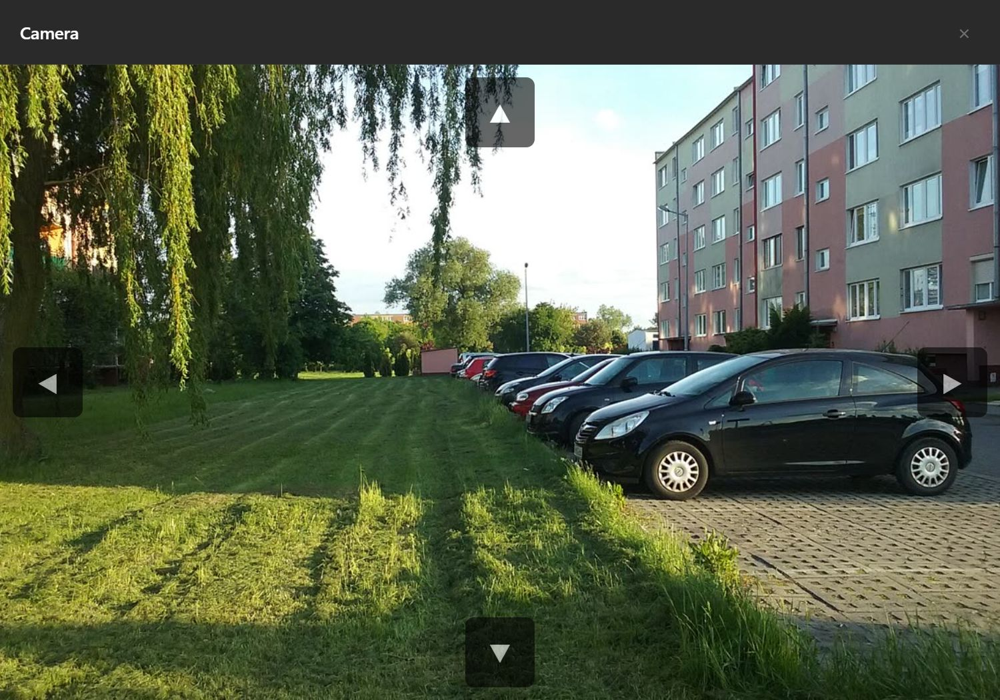

Tap for
a closer look
A short press opens the same stream in Macro Deck's modal.
The window keeps the tile's movement arrows, so a PTZ camera stays controllable while you watch.
A short press opens the same stream in Macro Deck's modal.
The window keeps the tile's movement arrows, so a PTZ camera stays controllable while you watch.
